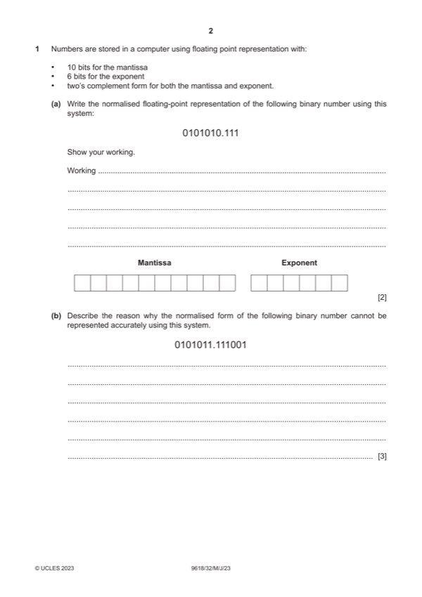
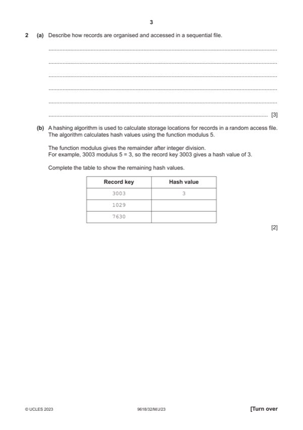
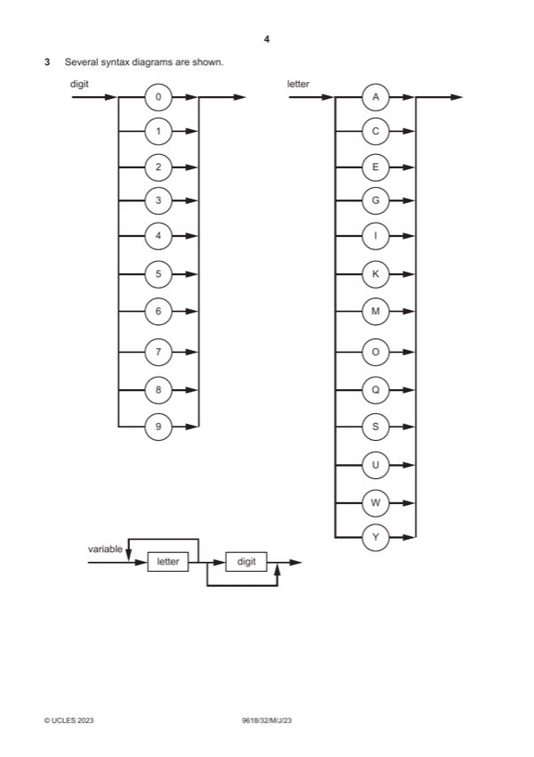
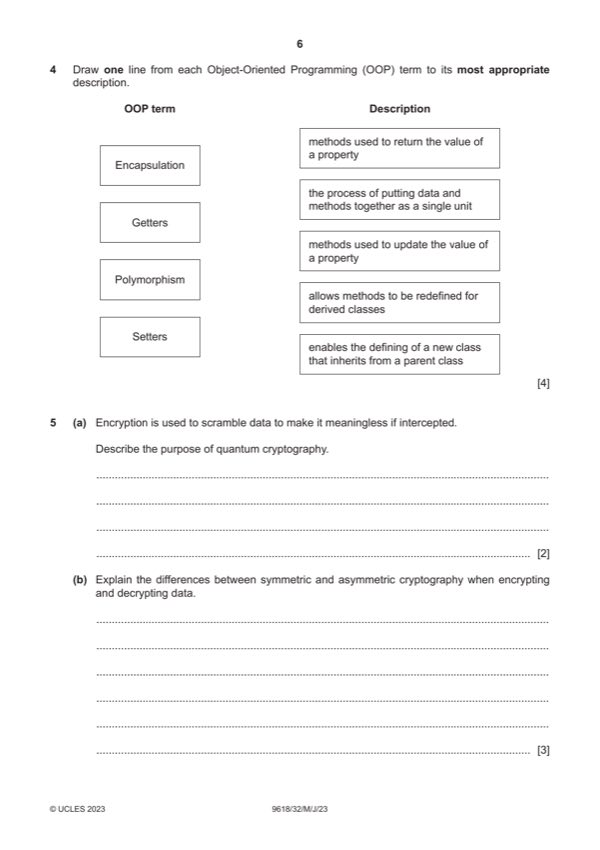
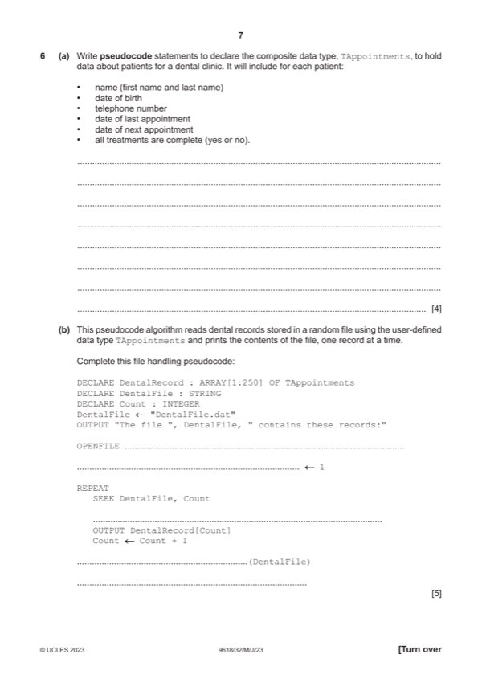
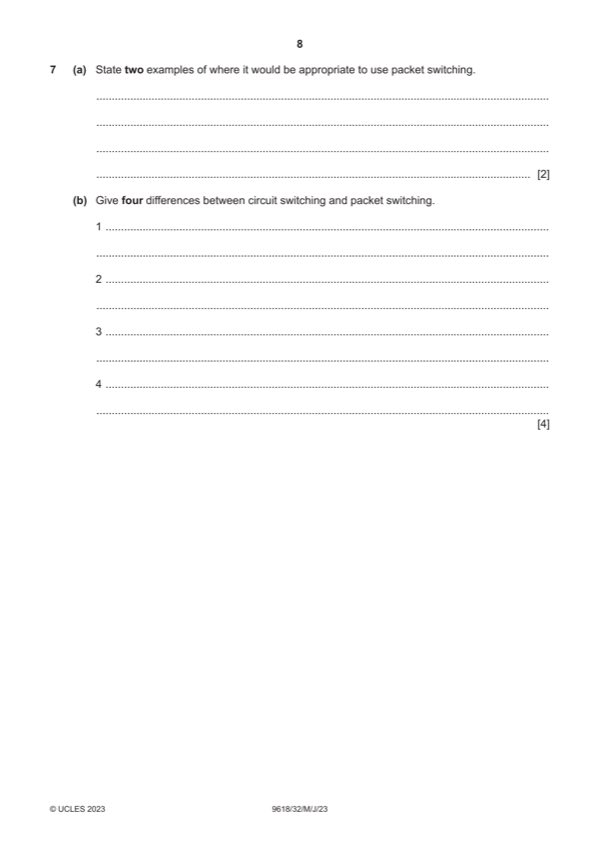
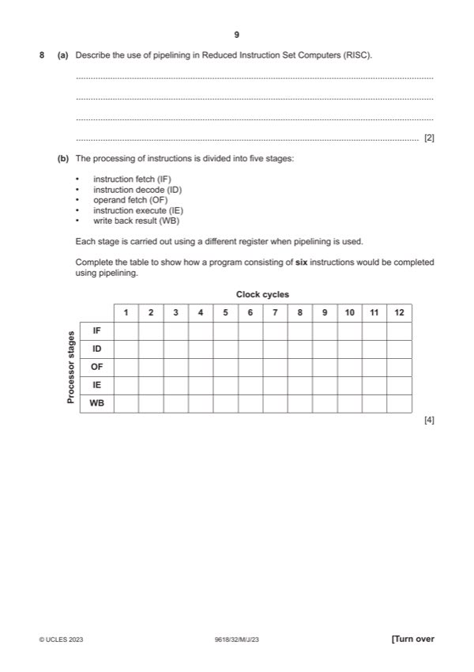
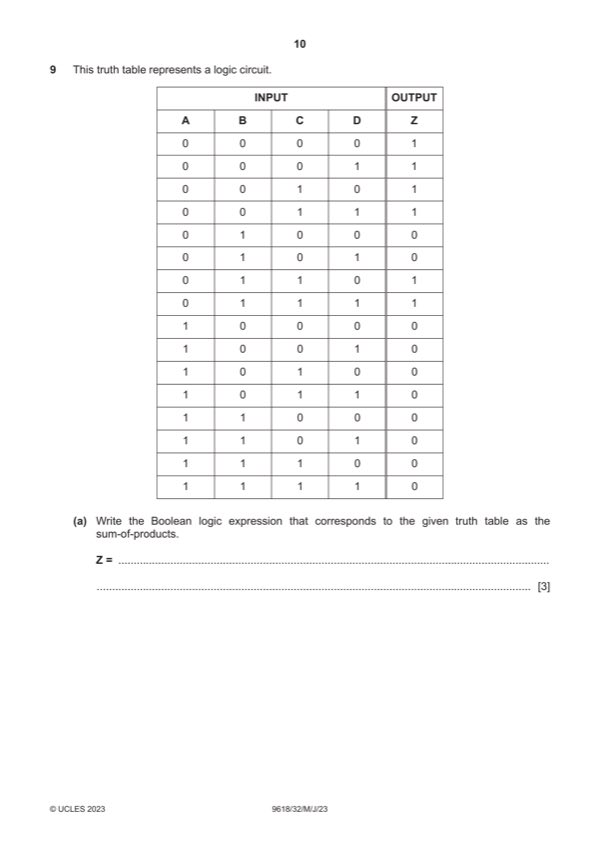
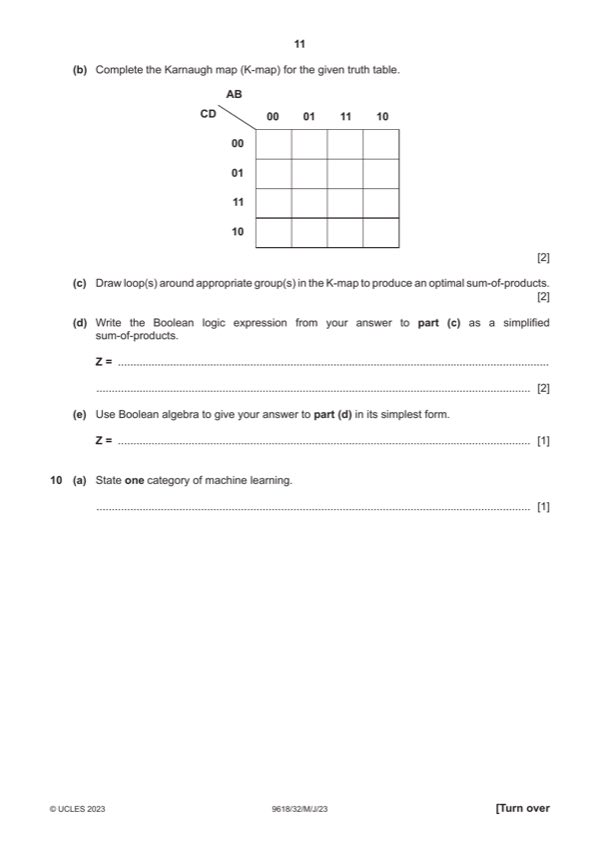
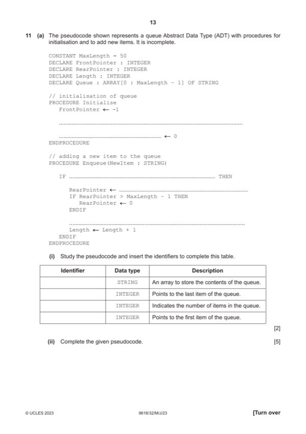

Question 0
Part 0 — solution
- exponent = 6 (movement of 6 bicimal places seen to find what exponent should
Mark points
- exponent = 6 (movement of 6 bicimal places seen to find what exponent should
Step-by-step solutions based on the mark scheme (not a mark-scheme dump).
Part 0 — solution

Part 1(a) — solution
Part 1(b) — solution
Part 1 — solution
Part 1 — solution
Part 1 — solution

Part 2(a) — solution
Part 2(b) — solution
Answer: 3003 3 · 1029 4 · 7630 0

Part 3(a) — solution
Part 3(b) — solution
Part 3(c)(i) — solution
Answer: AC768
Part 3(c)(ii) — solution

Part 4 — solution
Part 5(a) — solution
Part 5(b) — solution

Part 6(a) — solution
Part 6(b) — solution

Part 7(a) — solution
Part 7(b) — solution

Part 8(a) — solution
Part 8(b) — solution

Part 9(a) — solution
Part 9(b) — solution
Part 9(c) — solution
Part 9(d) — solution
Part 9(e) — solution

Part 10(a) — solution
Part 10(b) — solution

Part 11(a)(i) — solution
Part 11(a)(ii) — solution
Part 11(b) — solution